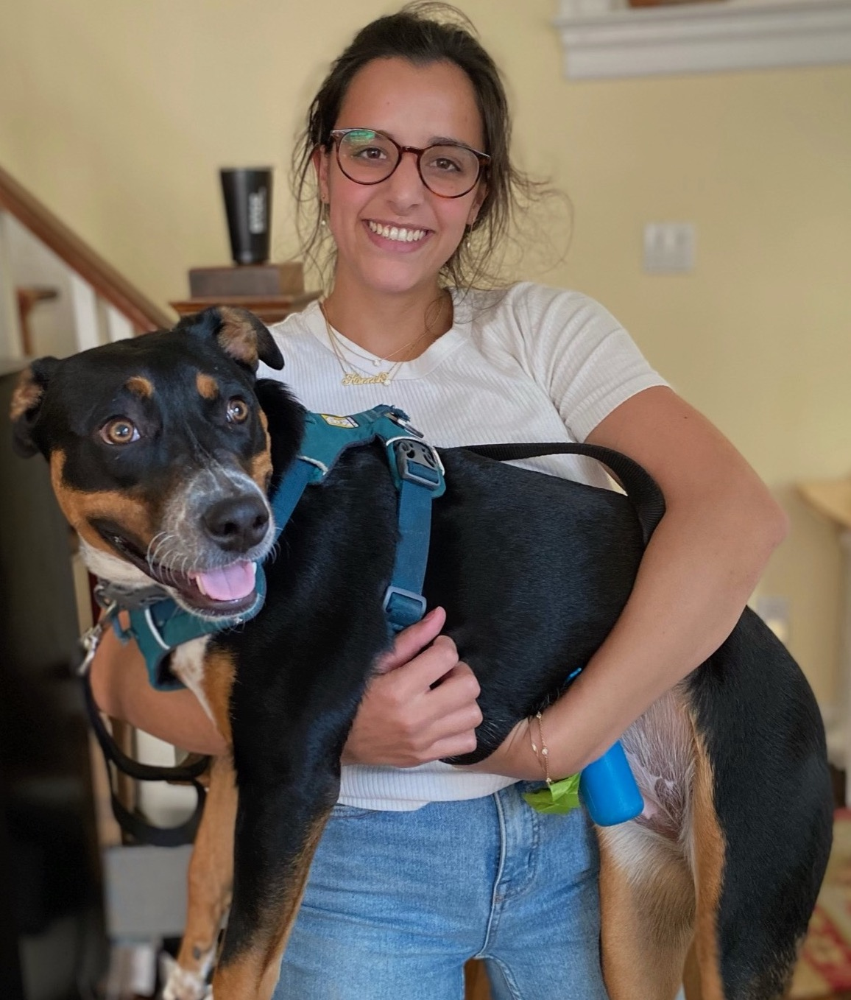

Hi, I'm Hannah. I'm an ML Engineer based in New York.

I'm an ML Engineer based in New York, building LLM-powered features at the intersection of product, data, and engineering. Cornell B.S., Columbia M.S.
For the past 2.5 years I've been building LLM-powered features end
to end — natural language to SQL/Python pipelines, eval and
error-analysis frameworks, and dynamic tool-driven architectures.
Most of my work lives at the intersection of product, data, and
engineering — integrating models, evaluating behavior, improving
reliability, and making tradeoffs so things work well for real
users.
Before that, I was a full-stack developer at DTCC, where I was the
lead UI engineer on my team — owning large parts of the front end
for a major financial platform in a highly regulated environment.
I have a B.S. in Information Science from Cornell and an M.S. in
Computer Science from Columbia, where I focused on machine
learning.
Skiing — grew up skiing in Vermont, try to get out West when I can. True crime podcasts — Wine and Crime, Murder With My Husband, My Favorite Murder. Ethical consumerism.